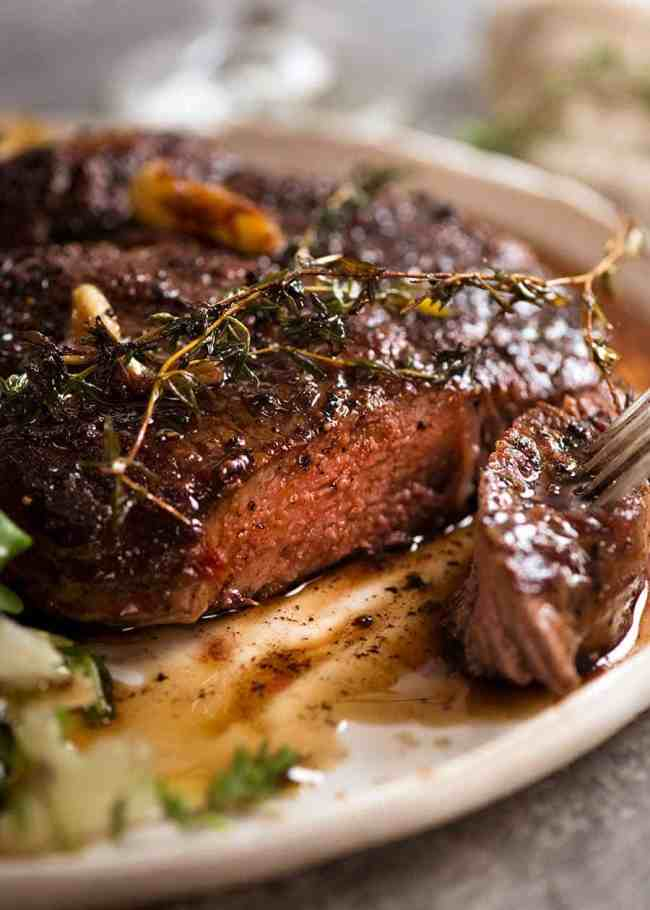

Steak

How to cook steak – the cheffy way!
Pan seared and basted with garlic thyme butter! It’s dramatic, simple
cooking at its best, you’ll look like a total pro and feel like you’re
dining at the best steakhouse in town.
Ingredients
- Thickish cut steak
- Butter
- Garlic
- Fresh thyme
Steps
-
Bring to room temp! This makes an amazing difference to cooking through
evenly rather than ending up with a thick overcooked band in order for
the very centre to be cooked to your liking;
-
Pat dry and season the steak generously with salt and pepper – this
helps form that amazing crust we all know and love about great steaks;
-
Get your skillet SMOKING HOT before putting the steak in – again, for
the crust
-
WARNING: The butter will sputter when you add the thyme, so stand back!
-
Take the steak off the stove BEFORE your desired internal temperature
(see chart below) because the internal temperature will continue to rise
as it rests; and
-
REST your steak for 5 to 10 minutes so it sucks its own juices back in
and the fibres relax. This is a must-do step for any protein you cook
hard and fast!